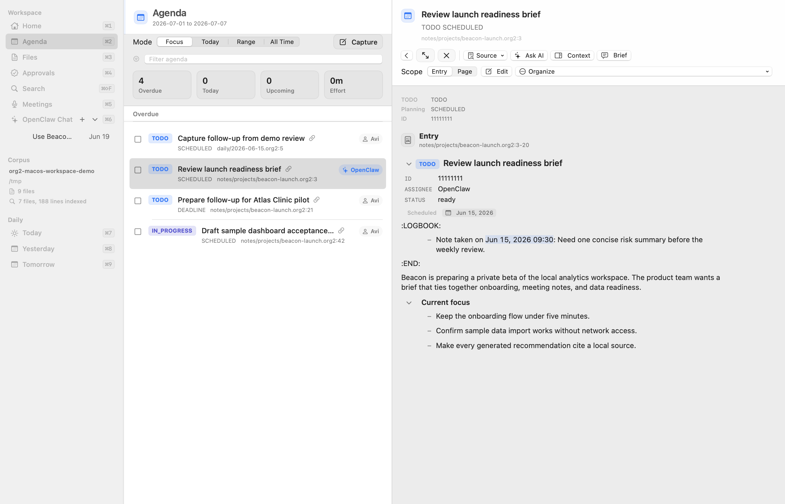
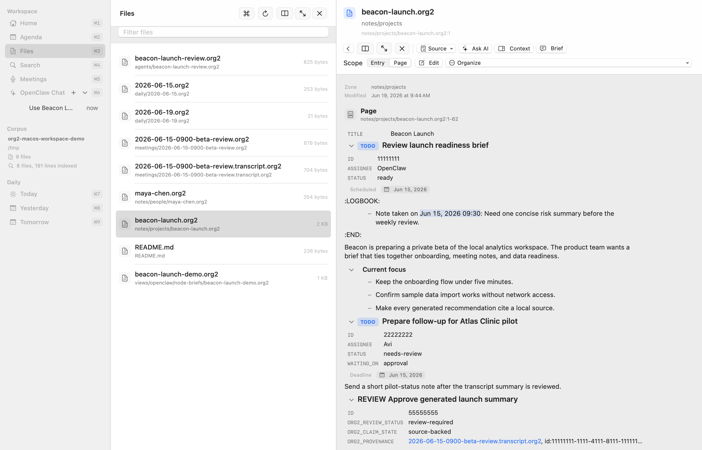
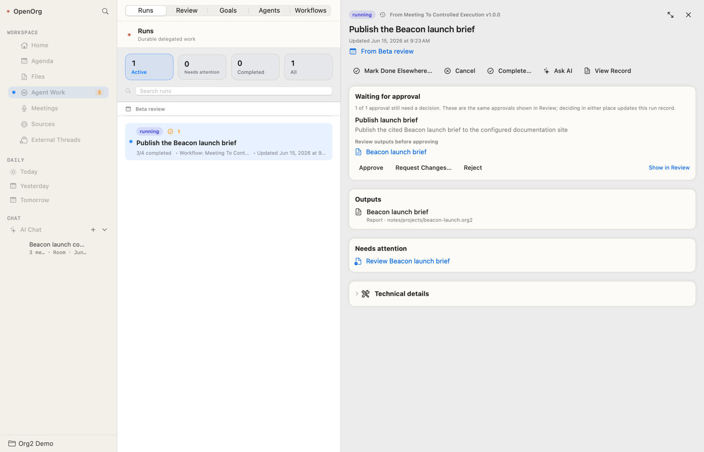
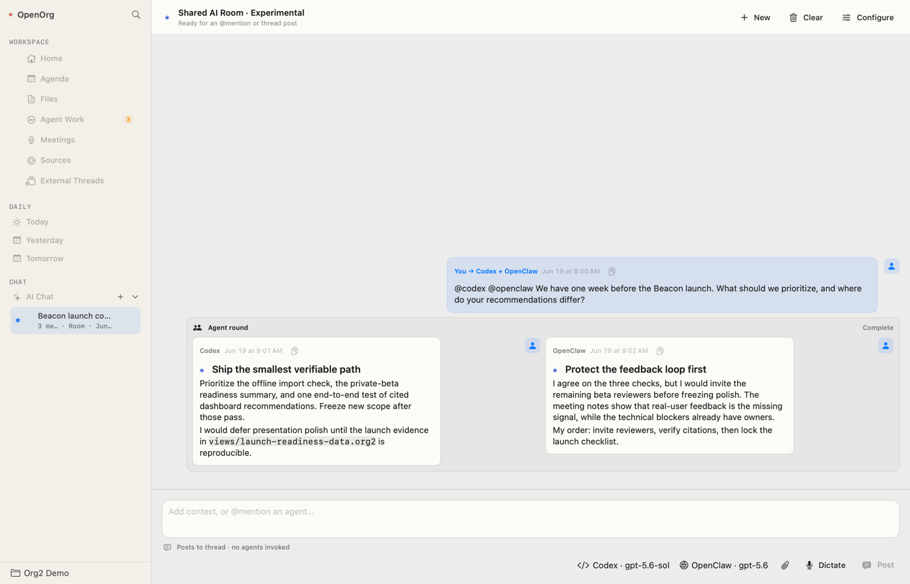
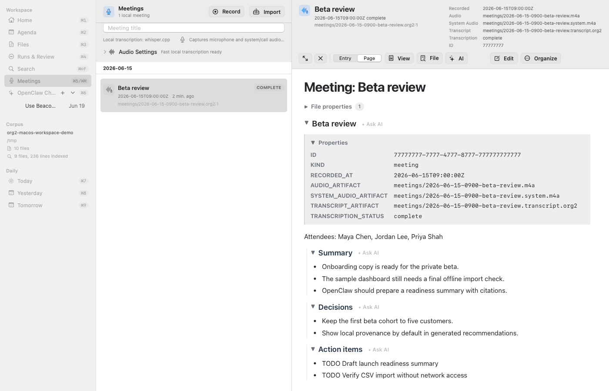
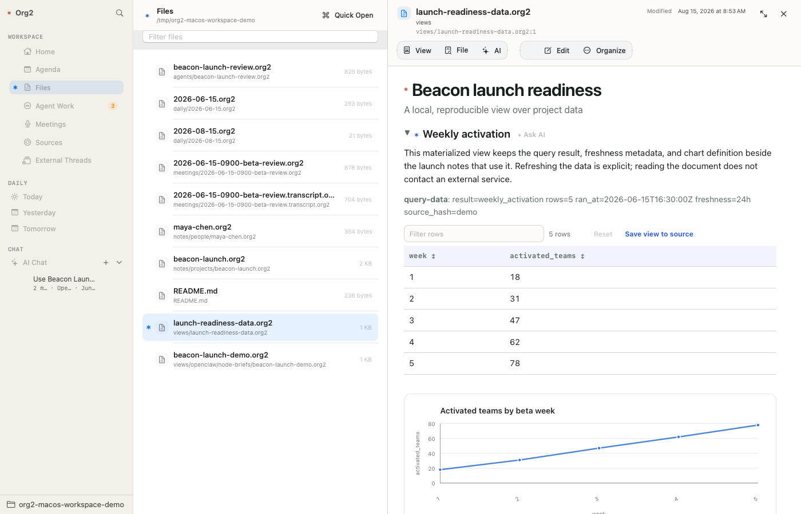

OpenOrg for macOS
A native workspace for local notes, planning, meetings, and agent work.
OpenOrg brings an ordinary folder of Org and Org2 files into one Mac app. Your files remain the source of truth, so you can also read, edit, sync, or version them with tools you already use.
Start with a folder
On first launch, choose Open an existing corpus, Create a new corpus, or Create a shared team corpus. Creating a workspace adds a welcome note and a few useful folders without overwriting files already there.
The short getting-started guide walks through a complete first loop: capture a commitment, find it in Agenda, ask an agent for bounded help, and review the result. You can reopen it later from Help → Getting Started.
Global capture works anywhere on your Mac while OpenOrg is running. Press Cmd-Ctrl-Return to add a note or task to today's daily note, including dates, tags, links, files, or images.
The workspace

- Agenda
see scheduled work and deadlines across one or all open corpora. Mark items done, reschedule them, change priority, or open the source note.
- Files
browse and search Org, Org2, Markdown, CSV, and generated workspace files.
- Agent Work
follow delegated runs, inspect outputs and citations, and handle decisions that need you.
- Meetings
record or import audio and keep transcripts, summaries, decisions, and follow-ups together.
- Sources
connect supported external sources such as Slack and Notion, run a sync, or control its schedule.
- AI Chat
talk with any configured local, remote, hosted, or self-hosted destination using selected workspace context.
- Search and Quick Open
find text, tasks, files, people, projects, meetings, agent work, and chat threads without remembering where they live.
You can open several corpora and switch between them from the sidebar. Agenda and Search can read across all mounted corpora, while writes stay scoped to the active corpus.
Write and read

OpenOrg offers two views of the same document:
Read renders headings, links, properties, tables, citations, media, source blocks, and other Org structure.
Edit Source provides a native macOS text editor with syntax highlighting, folding, diagnostics, list continuation, TODO and planning commands, link insertion, undo, and safe saving.
An optional split view keeps source and rendered preview visible together. Rendered tables can be filtered, sorted, and resized without changing the source. CSV files open in an editable table with a raw-text fallback.
Trusted Org2 plugins can add renderers for source-block languages. The shared
CLI HTML runtime powers both read mode and source preview, so the same plugin
also works in org2 export html without a separate Mac extension or app
rebuild. Renderer UI runs in a sandboxed, opaque-origin frame. See
Tooling reference → Plugins.
OpenOrg can export an ordinary document or selected subtree as a clean PDF. It can also preview slide decks and export presentation PDFs. Publication uses a disclosure-safe copy that removes private workspace metadata and unresolved local references from the shared output.
Agent work and approvals

Agent Work keeps each delegated job together with its goal, context, progress, outputs, citations, checks, and final outcome. The Runs view shows what is active, blocked, complete, or failed. The Review view collects the specific decisions that require a person.
You can approve, reject, request changes, discuss, or record that work was completed elsewhere. Batch selection is available when several independent items can be decided together. Review material stays inspectable after a decision, providing a durable record of what was proposed and what happened.
Reusable work can be saved as a workflow. Workflows remain ordinary files that you can inspect and edit; the app adds controls for validation, manual runs, activation, pausing, and schedules. See Workflows for the full lifecycle.
AI chat and agents

AI is optional. OpenOrg does not require an OpenOrg account, and ordinary note, Agenda, search, meeting, and document features work without an AI destination.
In OpenOrg → Settings… → AI Chat, you can configure named destinations including local Codex, remote Codex App Server, OpenClaw, OpenAI-compatible providers, Anthropic, OpenRouter, or Ollama. API keys are stored in macOS Keychain, not in the corpus.
Add files, headings, selected items, images, PDFs, audio, or other supported attachments as explicit context. Typing @ finds corpus files and destinations. In a shared room, mention a destination by name or use @all; every reply remains attributed to the agent that produced it.
Threads and their context are stored locally with the corpus. A settled thread can be reopened later. Long-running OpenClaw turns can stream progress, be stopped, and reconnect after an app restart when the connected runtime supports it.
The iOS app can relay chat to a paired Mac over Tailscale. The Mac remains responsible for corpus access and model connections, so it must be awake with OpenOrg running. See iOS setup for the current beta and pairing path.
See Agent quickstart for permissions, runtime integration, durable runs, and automation details.
Meetings and external sources

Meetings can be recorded in OpenOrg or created from an existing audio file. Choose local Whisper, macOS Speech, Fluid Voice, or a custom local command for transcription. The resulting audio, transcript, metadata, and notes remain visible in the corpus. A freshly transcribed meeting can optionally be sent to a named AI destination for a summary or follow-up workflow.
The Sources view manages supported Slack and Notion connections. Each connector can run on demand, pause or resume its schedule, and use a repeating interval or daily time. Imported material is staged for review rather than silently promoted into your canonical notes, and credentials remain outside the corpus.
Data notebooks and charts

Org2 documents can connect notes to CSV, Parquet, JSON, ClickHouse, or Metabase data, define SQL views, materialize results, and render charts. Refresh is explicit: opening a note never runs a remote query. Results retain source and freshness information so readers can see where the numbers came from.
Privacy and security
Your corpus is an ordinary folder on your Mac. OpenOrg does not upload it to an OpenOrg service. Information leaves the Mac only when you use a destination or source provider you configured, so its retention and data-use policy still applies.
Secrets belong in macOS Keychain or another protected local store. OpenOrg also supports GPG-backed :crypt: subtrees when individual sections need encrypted storage. Consequential external actions can be held for explicit approval before execution.
Back up or sync the corpus with a file-oriented tool you understand, such as Git, Time Machine, iCloud Drive, or Syncthing.
Keyboard essentials
Cmd-1throughCmd-6open the main workspace surfaces.Cmd-PorCmd-Kopens Quick Open.Cmd-Ctrl-Returnopens global capture.Cmd-7,Cmd-8, andCmd-9open today's, yesterday's, and tomorrow's daily notes.Cmd-Aselects visible items in Agenda, Files, Runs, or Review;Shift-Up/Downextends the selection.Cmd-Fsearches the active pane.Cmd-Rrefreshes the workspace when you need a manual reconciliation.
Use the in-app keyboard shortcuts sheet for the complete map.
Install and troubleshoot
Download the signed and notarized app from Downloads. Developers who want to build OpenOrg from source can follow the repository instructions on GitHub.
For a reproducible launch or refresh problem, use the macOS diagnostics guide. Sanitize diagnostics before sharing them, and never include credentials or private corpus content.